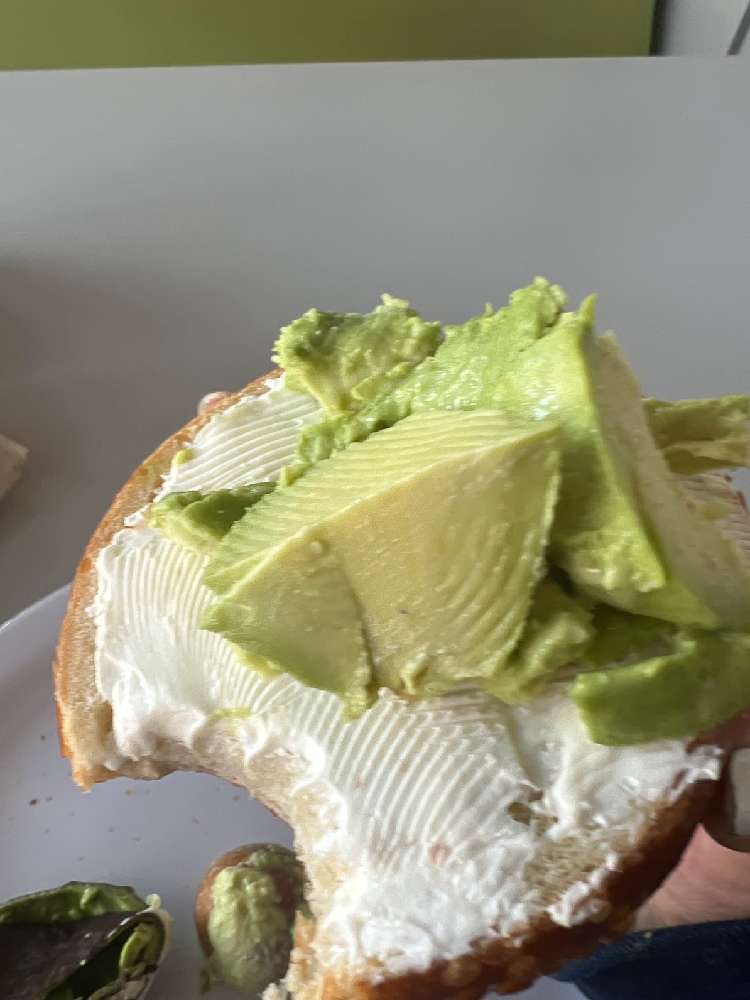
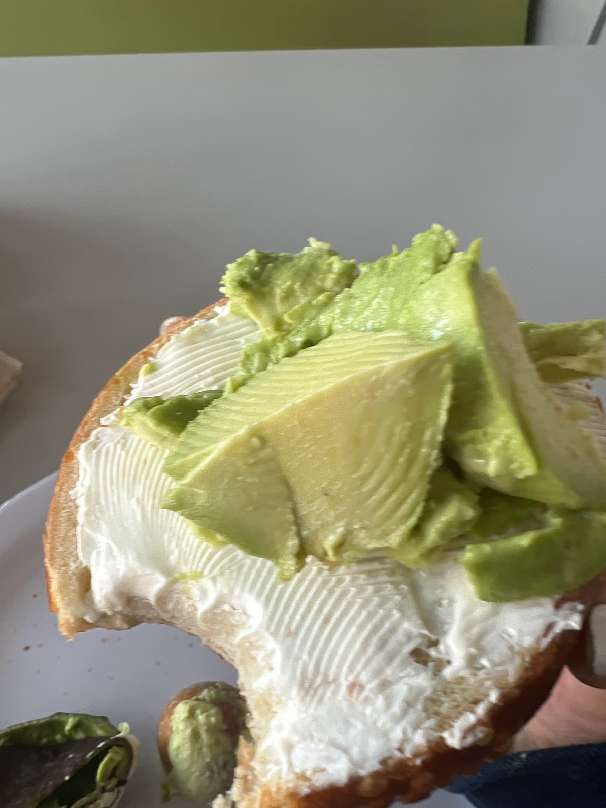
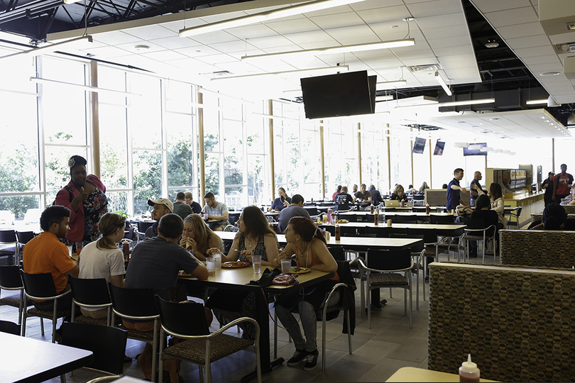
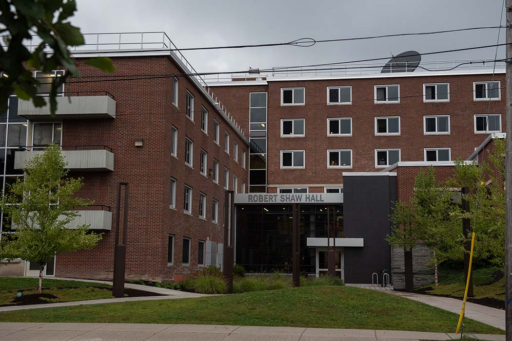
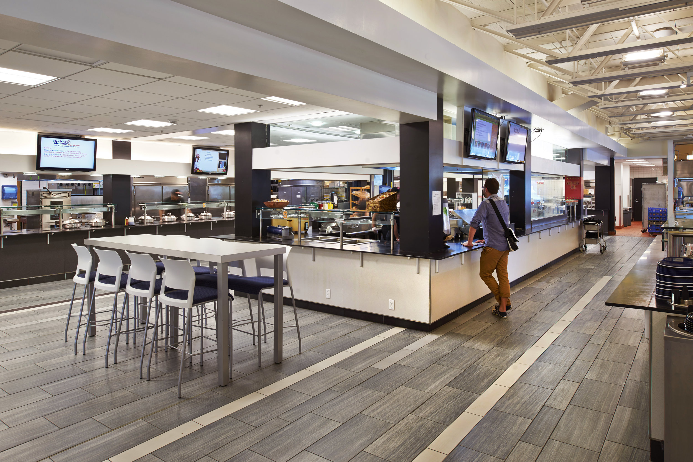
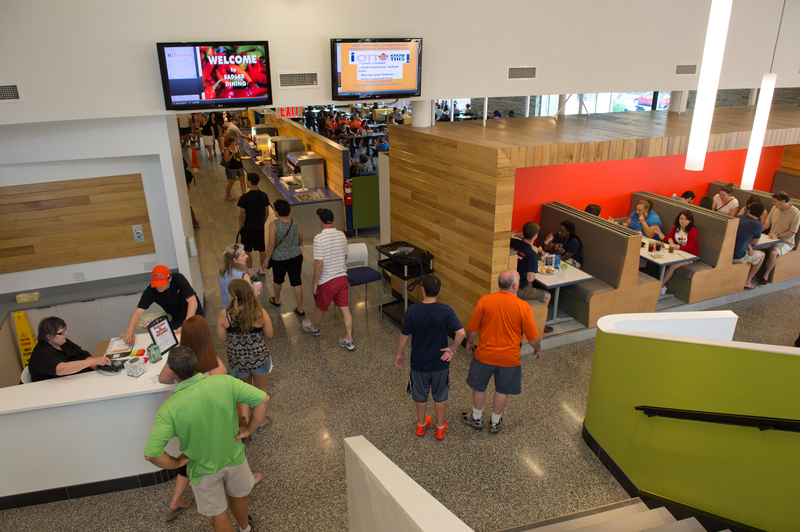
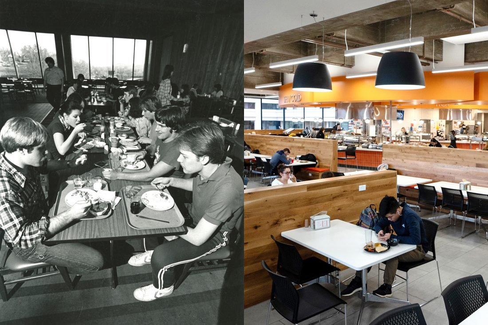

- Ernie Davis
- Graham
- Shaw
- Sadler
- BBB
 
- Make your own omelet station every Moring for breakfast, what a luxury. Other than that Ernie Davis gives me stomach problems. The ambiance is lacking though there is a lot of cement

-
Salad bar is elite, you can put grilled chicken on it and they have grilled cheese that you dont need to ask the sandwhich bar to make.

- Milkshakes and a kosher section. The actual dining hall is very cute it looks like a upscale diner

- Painfully mid


- I once got a waffle here and it was hard as a rock I could knock on it. Also BBB is not in the bast location.